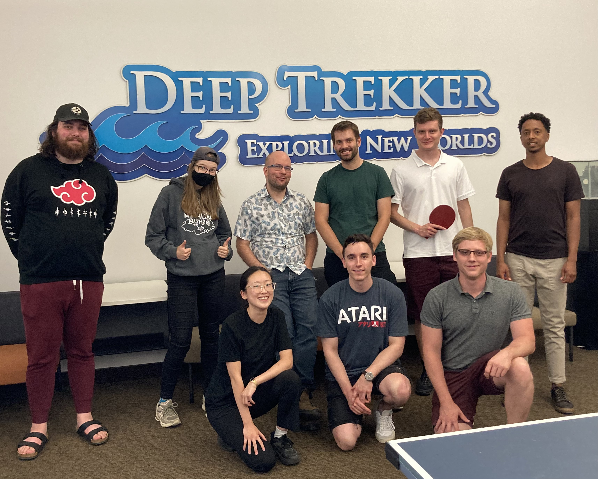

Internship @ DeepTrekker Inc.
May 2022 - Aug 2022 | Kitchener, Ontario CA
My first internship in Canada, I had an opportunity to expose myself at an Robot industry. This coop is special because it is my first coop term after the program transfer from management engineering to Electrical Engineering. Before, I worried that I would not get a coop job in the hardware industry since I did not have any hardware experience from previous coop terms. However, I succeed in acquiring a coop position in the robotics industry. I enjoyed working at Deep Trekker as QA Engineering Intern. Through this internship, I stepped closer to my passionate dream as an Electrical Engineer. I had a close look at the Remote Operating Vehicles (ROV) and tested raw PCBs. Working fully in person enhanced my knowledge in Electrical Engineering because I learned alot from professional Electrical Engineers by observing what kind of jobs they did while using different types of technical tools.
Things I was responsible at DeepTreker Inc. were following:
- Bug Report
- Manage
in reviewtickets - Document testing manual
- Present new QA procedure